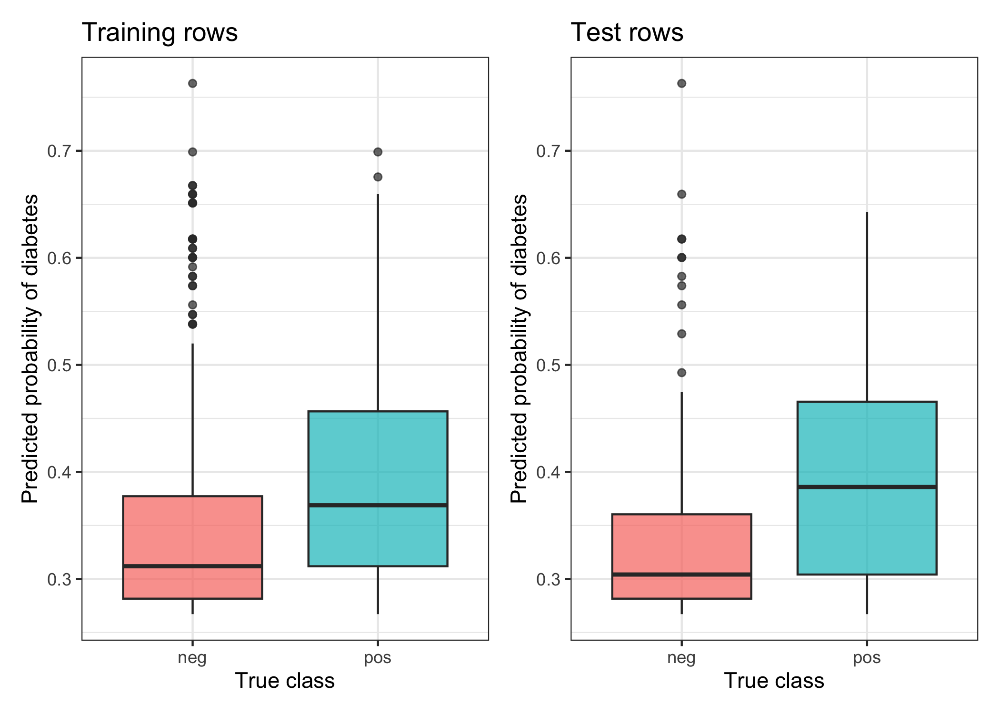
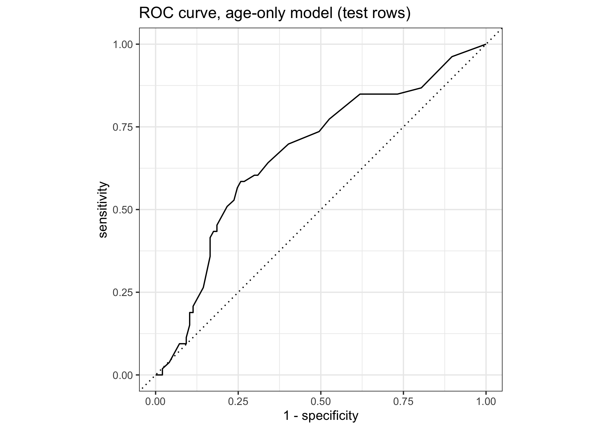
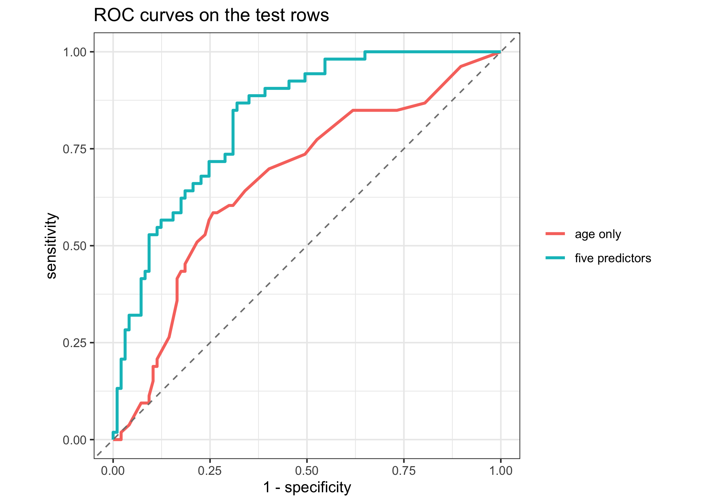
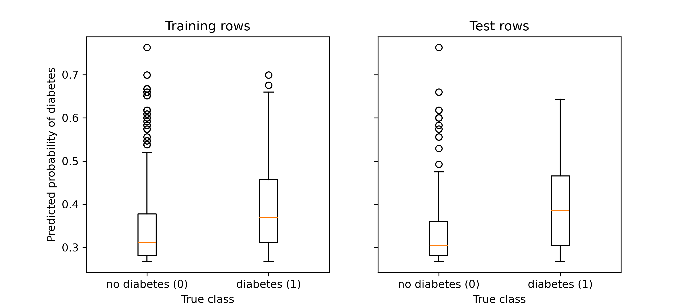
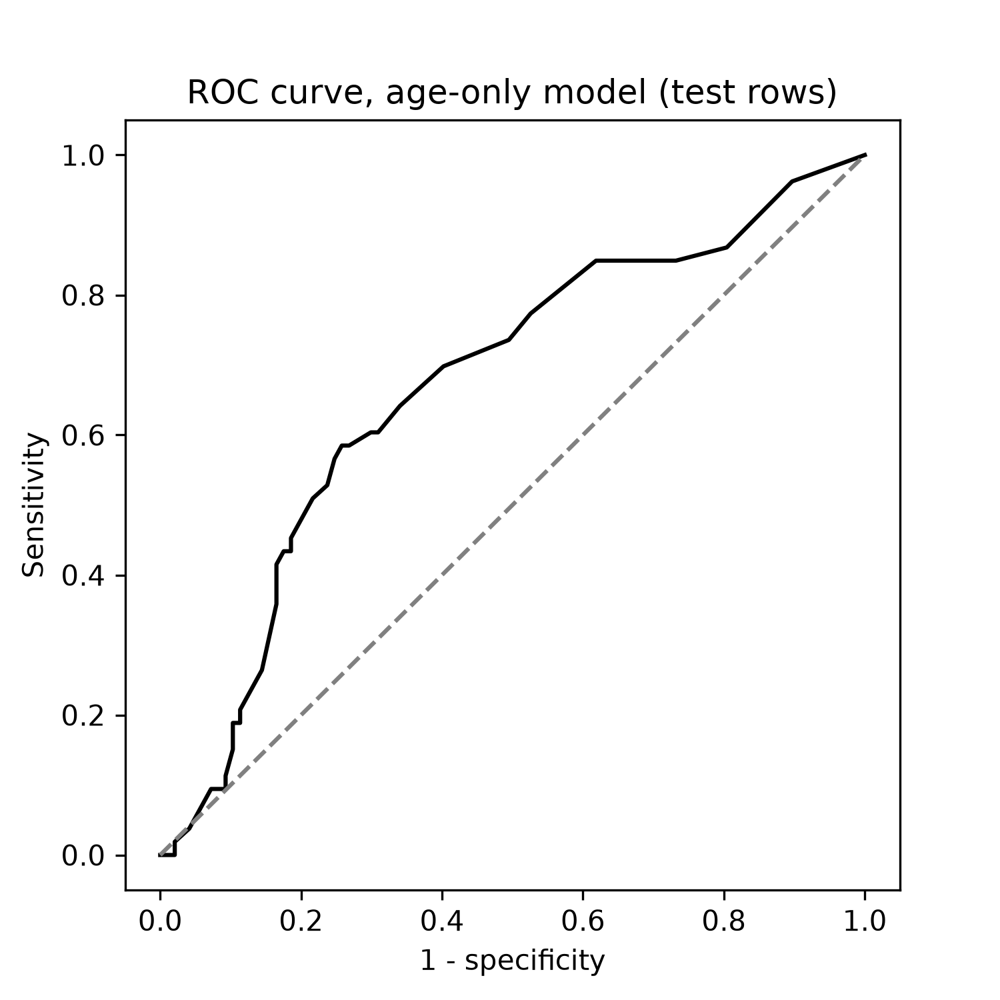
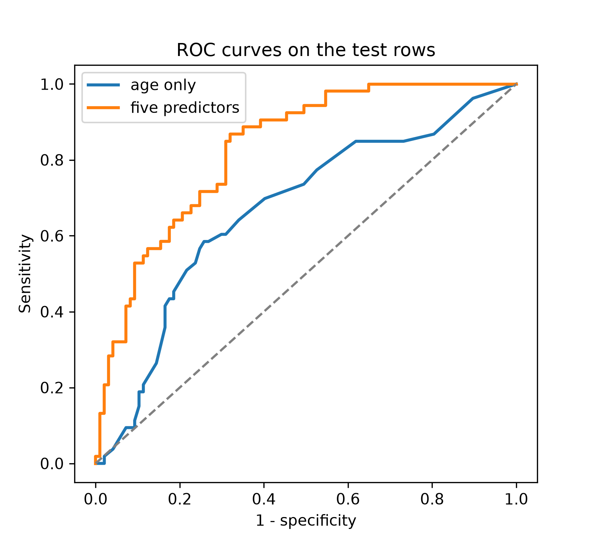

# Packages for this exercise. If one is missing, remove the # and run this line once:
# install.packages(c("tidyverse", "tidymodels", "patchwork"))
library(tidyverse)
library(tidymodels)
library(patchwork) # to put two plots side by side
theme_set(theme_bw()) # white background for every plot
options(pillar.sigfig = 3) # show three significant figures in tablesExercise 5.3 — Evaluating a classification model on training and test data
Exercise 5.1 evaluated a regression model by the size of its errors. A classification model predicts a class, diabetes or no diabetes, so an error is simply a wrong class, and there are two kinds of wrong. In this exercise we fit a logistic regression on the training rows, turn its probabilities into classes with a threshold, and measure its performance on the training and the test rows, first with metrics that depend on the threshold and then with the ROC curve and the AUC, which do not. Finally we add more predictors and compare.
Theory: predicted probabilities and predicted classes; accuracy, precision, recall, sensitivity and specificity; which class is the event; the distribution of predicted probabilities; the ROC curve and the area under it (AUC); underfitting in classification.
NoteThe plots are for looking at
The code for every plot is folded away just above it, in case you are curious, and all of it is in the notebook linked at the top of each tab. You are not expected to write it yourself.
Download this exercise as an R Markdown notebook (.Rmd): the text and every code cell of the R version, including the code for the plots, with the blanks left for you to fill in. Open it in RStudio and run it a chunk at a time.
Packages and data
The same 750 people and the same split as Exercise 5.1, from data/diabetes_clean.csv. This time we keep five predictors, because Part 4 uses them all. Triceps skinfold, insulin and blood pressure are left out because in this data set a zero in those columns means “not measured”. The outcome is a factor with the levels neg then pos.
diabetes <- read_csv("data/diabetes_clean.csv") |>
select(pregnant, glucose, mass, pedigree, age, diabetes) |>
mutate(diabetes = factor(diabetes, levels = c("neg", "pos")))
test_rows <- seq(1, nrow(diabetes), by = 5) # every fifth person is held back
train <- diabetes[-test_rows, ]
test <- diabetes[test_rows, ]
count(train, diabetes)#> # A tibble: 2 × 2
#> diabetes n
#> <fct> <int>
#> 1 neg 380
#> 2 pos 220count(test, diabetes)#> # A tibble: 2 × 2
#> diabetes n
#> <fct> <int>
#> 1 neg 97
#> 2 pos 53Always look at the number of people in each class first. 220 of the 600 training rows (36.7%) and 53 of the 150 test rows (35.3%) have diabetes.
Part 1 — An age-only model, and its predictions
Start with a very simple model, diabetes ~ age, built as a workflow: a model specification, a recipe and the workflow that joins them.
log_spec <- logistic_reg() |>
set_engine("glm") |>
set_mode("classification")
log_rec <- recipe(diabetes ~ age, data = train)
log_wf <- workflow() |>
add_model(log_spec) |>
add_recipe(log_rec)
log_fit <- log_wf |>
fit(data = train)
tidy(log_fit)#> # A tibble: 2 × 5
#> term estimate std.error statistic p.value
#> <chr> <dbl> <dbl> <dbl> <dbl>
#> 1 (Intercept) -1.77 0.262 -6.76 1.40e-11
#> 2 age 0.0363 0.00727 4.99 5.98e- 7The coefficient of age is positive: older people have higher predicted odds of diabetes, by a factor of \(e^{0.0363} = 1.04\) per year.
A classification model first gives a probability for each person. To turn it into a predicted class we choose a threshold, as in Exercise 4.3; here we use the usual 0.5. Predict the training rows:
train_preds <- predict(log_fit, new_data = train, type = "prob") |>
bind_cols(train) |>
mutate(pred_class = factor(if_else(.pred_pos >= 0.5, "pos", "neg"),
levels = c("neg", "pos")))
head(train_preds)#> # A tibble: 6 × 9
#> .pred_neg .pred_pos pregnant glucose mass pedigree age diabetes pred_class
#> <dbl> <dbl> <dbl> <dbl> <dbl> <dbl> <dbl> <fct> <fct>
#> 1 0.543 0.457 8 129 27.6 0.828 44 pos neg
#> 2 0.696 0.304 2 132 38.2 0.696 26 neg neg
#> 3 0.588 0.412 6 184 24.7 0.192 39 neg neg
#> 4 0.726 0.274 4 108 31.6 0.178 22 neg neg
#> 5 0.640 0.360 3 100 46.3 2.42 33 pos neg
#> 6 0.726 0.274 1 88 32.4 0.447 22 neg neg.pred_pos is the predicted probability of pos (diabetes) and .pred_neg that of neg; they add up to 1. Now the same for the test rows:
test_preds <- predict(log_fit, new_data = test, type = "prob") |>
bind_cols(test) |>
mutate(pred_class = factor(if_else(.pred_pos >= 0.5, "pos", "neg"),
levels = c("neg", "pos")))
count(test_preds, pred_class)#> # A tibble: 2 × 2
#> pred_class n
#> <fct> <int>
#> 1 neg 130
#> 2 pos 20At 0.5 the age-only model predicts diabetes for only 20 of the 150 test patients: a probability of 0.5 or more needs an age of 49 or more.
ImportantLearning points
- The same workflow steps as for regression: specify, write the recipe, fit on the training rows, predict both sets.
- A classifier gives probabilities first; the threshold turns them into classes.
Part 2 — Metrics on the training and the test rows
From the confusion table of Exercise 4.3 come several metrics:
- Accuracy: the proportion of people classified correctly.
- Precision: of the people predicted to have diabetes, the proportion who have it, \(TP / (TP + FP)\).
- Recall or sensitivity: of the people who have diabetes, the proportion the model finds, \(TP / (TP + FN)\).
- Specificity: of the people without diabetes, the proportion correctly left alone, \(TN / (TN + FP)\).
yardstick computes them all in one go with metric_set(). yardstick treats the first level of the outcome as the event, which here is neg, so we ask for event_level = "second" to make pos (diabetes) the event.
class_metrics <- metric_set(accuracy, precision, recall, sens, spec)
class_metrics(train_preds, truth = diabetes, estimate = pred_class,
event_level = "second")#> # A tibble: 5 × 3
#> .metric .estimator .estimate
#> <chr> <chr> <dbl>
#> 1 accuracy binary 0.623
#> 2 precision binary 0.461
#> 3 recall binary 0.159
#> 4 sens binary 0.159
#> 5 spec binary 0.892Recall and sensitivity are the same thing under two names. Now compute the same metrics on the test rows:
# Replace every ______ below, then run this cell.
class_metrics(______, truth = diabetes, estimate = pred_class,
event_level = ______)
TipStuck?
Use the test predictions, test_preds, and keep pos as the event: it is the second level.
Question! Is the model overfitting? Is it any good? Compare the test accuracy with a “model” that predicts no diabetes for everybody: it would be right for the 97 of 150 test patients without diabetes, an accuracy of 0.647.
Training and test metrics are similar, so there is no strong sign of overfitting. But the age-only model is no more accurate than predicting “no diabetes” for everyone, and it finds fewer than one in five of the people with diabetes. It underfits: age alone is not enough.
ImportantLearning points
- Accuracy, precision, recall (= sensitivity) and specificity all depend on the threshold.
- Say which class is the event:
event_level = "second"in yardstick when the event is the second level;pos_labelin scikit-learn. - Compare accuracy with the share of the largest class: a model must beat predicting the same class for everyone.
Part 3 — Score distributions and the ROC curve
The metrics above looked at one threshold. To see the model’s probabilities themselves, plot them separately for the people with and without diabetes. A useful model gives the people with diabetes higher probabilities:
Code for this plot (optional)
train_plot <- ggplot(train_preds, aes(x = diabetes, y = .pred_pos, fill = diabetes)) +
geom_boxplot(alpha = 0.7) +
labs(x = "True class", y = "Predicted probability of diabetes",
title = "Training rows") +
theme(legend.position = "none")
test_plot <- ggplot(test_preds, aes(x = diabetes, y = .pred_pos, fill = diabetes)) +
geom_boxplot(alpha = 0.7) +
labs(x = "True class", y = "Predicted probability of diabetes",
title = "Test rows") +
theme(legend.position = "none")
train_plot + test_plot
The boxes overlap a great deal, in both sets: age separates the two groups only weakly. Every threshold we could draw across this plot would misclassify many people.
The ROC curve shows all thresholds at once. For each threshold it plots the sensitivity against \(1 - \text{specificity}\), the proportion of false alarms; you computed three of its points by hand in Exercise 4.3. A model that guesses at random follows the diagonal. The area under the curve (AUC) summarises the curve in one number: 0.5 for guessing, 1 for perfect separation. It is also the probability that a randomly chosen person with diabetes gets a higher predicted probability than a randomly chosen person without.
roc_age <- roc_curve(test_preds, truth = diabetes, .pred_pos, event_level = "second")
auc_age <- roc_auc(test_preds, truth = diabetes, .pred_pos, event_level = "second")
auc_age#> # A tibble: 1 × 3
#> .metric .estimator .estimate
#> <chr> <chr> <dbl>
#> 1 roc_auc binary 0.668autoplot(roc_age) +
ggtitle("ROC curve, age-only model (test rows)")
Now compute the AUC on the training rows, and compare:
# Replace every ______ below, then run this cell.
roc_auc(______, truth = diabetes, ______, event_level = "second")
ImportantLearning points
- Plot the predicted probabilities by true class: the less the groups overlap, the better the model separates them.
- The ROC curve shows sensitivity against 1 - specificity for every threshold; the AUC summarises it, 0.5 for guessing and 1 for perfect.
- AUC does not depend on a threshold, so it compares models before anyone has chosen one.
Part 4 — Include more features
Age alone was not enough. Add the other four predictors. The recipe also standardises them with step_normalize() (Day 2), so that the coefficients are on the same scale and can be compared: each is the change in log-odds for one standard deviation of that predictor. The model specification stays the same.
log_rec2 <- recipe(diabetes ~ pregnant + glucose + mass + pedigree + age,
data = train) |>
step_normalize(all_numeric_predictors())
log_wf2 <- workflow() |>
add_model(log_spec) |>
add_recipe(log_rec2)
log_fit2 <- log_wf2 |>
fit(data = train)
tidy(log_fit2)#> # A tibble: 6 × 5
#> term estimate std.error statistic p.value
#> <chr> <dbl> <dbl> <dbl> <dbl>
#> 1 (Intercept) -0.702 0.102 -6.86 6.68e-12
#> 2 pregnant 0.235 0.145 1.62 1.06e- 1
#> 3 glucose 1.02 0.109 9.34 9.23e-21
#> 4 mass 0.464 0.105 4.41 1.05e- 5
#> 5 pedigree 0.220 0.0981 2.24 2.51e- 2
#> 6 age 0.149 0.142 1.05 2.94e- 1Glucose has by far the largest coefficient, 1.02 log-odds per standard deviation, followed by body mass (0.46). Once glucose is in the model, age adds little (0.15). (R’s step_normalize() divides by the standard deviation with \(n - 1\), Python’s StandardScaler() with \(n\); the coefficients differ in the fourth digit, the predictions do not.)
Predict both sets and compute the metrics:
train_preds2 <- predict(log_fit2, new_data = train, type = "prob") |>
bind_cols(train) |>
mutate(pred_class = factor(if_else(.pred_pos >= 0.5, "pos", "neg"),
levels = c("neg", "pos")))
test_preds2 <- predict(log_fit2, new_data = test, type = "prob") |>
bind_cols(test) |>
mutate(pred_class = factor(if_else(.pred_pos >= 0.5, "pos", "neg"),
levels = c("neg", "pos")))
class_metrics(train_preds2, truth = diabetes, estimate = pred_class,
event_level = "second")#> # A tibble: 5 × 3
#> .metric .estimator .estimate
#> <chr> <chr> <dbl>
#> 1 accuracy binary 0.763
#> 2 precision binary 0.714
#> 3 recall binary 0.591
#> 4 sens binary 0.591
#> 5 spec binary 0.863class_metrics(test_preds2, truth = diabetes, estimate = pred_class,
event_level = "second")#> # A tibble: 5 × 3
#> .metric .estimator .estimate
#> <chr> <chr> <dbl>
#> 1 accuracy binary 0.767
#> 2 precision binary 0.737
#> 3 recall binary 0.528
#> 4 sens binary 0.528
#> 5 spec binary 0.897Test accuracy rises from 0.647 to 0.767 and sensitivity from 0.189 to 0.528. Training and test are still close, so the richer model does not overfit either. Complete the code for its ROC curve and AUC on the test rows:
# Replace every ______ below, then run this cell.
roc_rich <- roc_curve(______, truth = diabetes, .pred_pos, event_level = "second")
auc_rich <- roc_auc(______, truth = diabetes, .pred_pos, event_level = "second")
auc_richThe two ROC curves together. The richer model’s curve lies further from the diagonal at nearly every threshold:
Code for this plot (optional)
roc_both <- bind_rows(
roc_curve(test_preds, truth = diabetes, .pred_pos, event_level = "second") |>
mutate(model = "age only"),
roc_curve(test_preds2, truth = diabetes, .pred_pos, event_level = "second") |>
mutate(model = "five predictors"))
ggplot(roc_both, aes(x = 1 - specificity, y = sensitivity, colour = model)) +
geom_path(linewidth = 1) +
geom_abline(linetype = "dashed", colour = "grey50") +
coord_equal() +
labs(colour = NULL, title = "ROC curves on the test rows")
Question! The richer model is better on every metric. Could adding even more predictors ever make a model worse on the test rows? What would you look for?
ImportantLearning points
- Adding relevant predictors improved every metric and the AUC, on training and test alike.
- Standardise the predictors when you want to compare the sizes of their coefficients.
- More flexible models can still overfit: keep comparing training and test.
Download this exercise as a Jupyter notebook (.ipynb): the text and every code cell of the Python version, including the code for the plots, with the blanks left for you to fill in. Open it in Jupyter or VS Code and run it a cell at a time.
Packages and data
# Packages for this exercise. If one is missing, install it once from a terminal
# (in a Jupyter notebook, type %pip instead of pip):
# pip install pandas numpy matplotlib scikit-learn
import pandas as pd
import numpy as np
import matplotlib.pyplot as plt
from sklearn.pipeline import Pipeline
from sklearn.preprocessing import StandardScaler
from sklearn.linear_model import LogisticRegression
from sklearn.metrics import accuracy_score, precision_score, recall_score
from sklearn.metrics import roc_curve, roc_auc_scoreThe same 750 people and the same split as Exercise 5.1, from data/diabetes_clean.csv. This time we keep five predictors, because Part 4 uses them all. Triceps skinfold, insulin and blood pressure are left out because in this data set a zero in those columns means “not measured”. The outcome is coded 1 for pos and 0 for neg.
diabetes = pd.read_csv("data/diabetes_clean.csv")
diabetes = diabetes[["pregnant", "glucose", "mass", "pedigree", "age", "diabetes"]]
diabetes["diabetes"] = (diabetes["diabetes"] == "pos").astype(int) # 1 = pos, 0 = neg
is_test = diabetes.index % 5 == 0 # every fifth person is held back
train = diabetes[~is_test]
test = diabetes[is_test]
print(train["diabetes"].value_counts())#> diabetes
#> 0 380
#> 1 220
#> Name: count, dtype: int64print(test["diabetes"].value_counts())#> diabetes
#> 0 97
#> 1 53
#> Name: count, dtype: int64Always look at the number of people in each class first. 220 of the 600 training rows (36.7%) and 53 of the 150 test rows (35.3%) have diabetes.
Part 1 — An age-only model, and its predictions
Start with a very simple model: diabetes from age only. C=np.inf switches off scikit-learn’s default penalty, so the coefficients match R’s.
age_model = LogisticRegression(C=np.inf)
age_model = age_model.fit(train[["age"]], train["diabetes"])
print("intercept:", round(age_model.intercept_[0], 4))#> intercept: -1.7715print("age: ", round(age_model.coef_[0, 0], 4))#> age: 0.0363The coefficient of age is positive: older people have higher predicted odds of diabetes, by a factor of \(e^{0.0363} = 1.04\) per year.
A classification model first gives a probability for each person. To turn it into a predicted class we choose a threshold, as in Exercise 4.3; here we use the usual 0.5. Predict the training rows:
train_preds = train.copy()
train_preds["prob"] = age_model.predict_proba(train[["age"]])[:, 1] # probability of 1
train_preds["pred_class"] = (train_preds["prob"] >= 0.5).astype(int)
train_preds.head().round(3)#> pregnant glucose mass pedigree age diabetes prob pred_class
#> 1 8 129 27.6 0.828 44 1 0.457 0
#> 2 2 132 38.2 0.696 26 0 0.304 0
#> 3 6 184 24.7 0.192 39 0 0.412 0
#> 4 4 108 31.6 0.178 22 0 0.274 0
#> 6 3 100 46.3 2.420 33 1 0.360 0prob is the predicted probability of diabetes (1) and pred_class the predicted class at the threshold 0.5. Now the same for the test rows:
test_preds = test.copy()
test_preds["prob"] = age_model.predict_proba(test[["age"]])[:, 1]
test_preds["pred_class"] = (test_preds["prob"] >= 0.5).astype(int)
test_preds["pred_class"].value_counts()#> pred_class
#> 0 130
#> 1 20
#> Name: count, dtype: int64At 0.5 the age-only model predicts diabetes for only 20 of the 150 test patients: a probability of 0.5 or more needs an age of 49 or more.
ImportantLearning points
- The same workflow steps as for regression: specify, write the recipe, fit on the training rows, predict both sets.
- A classifier gives probabilities first; the threshold turns them into classes.
Part 2 — Metrics on the training and the test rows
From the confusion table of Exercise 4.3 come several metrics:
- Accuracy: the proportion of people classified correctly.
- Precision: of the people predicted to have diabetes, the proportion who have it, \(TP / (TP + FP)\).
- Recall or sensitivity: of the people who have diabetes, the proportion the model finds, \(TP / (TP + FN)\).
- Specificity: of the people without diabetes, the proportion correctly left alone, \(TN / (TN + FP)\).
scikit-learn treats 1 as the event (pos_label=1). It has no specificity function, but specificity is the recall of the other class, so we ask for recall_score(..., pos_label=0).
truth = train_preds["diabetes"]
predicted = train_preds["pred_class"]
print("accuracy: ", round(accuracy_score(truth, predicted), 3))#> accuracy: 0.623print("precision: ", round(precision_score(truth, predicted), 3))#> precision: 0.461print("recall: ", round(recall_score(truth, predicted), 3))#> recall: 0.159print("sensitivity:", round(recall_score(truth, predicted), 3))#> sensitivity: 0.159print("specificity:", round(recall_score(truth, predicted, pos_label=0), 3))#> specificity: 0.892Recall and sensitivity are the same thing under two names. Now compute the same metrics on the test rows:
# Replace every ______ below, then run this cell.
truth = ______
predicted = test_preds["pred_class"]
print("accuracy: ", round(accuracy_score(truth, predicted), 3))
print("precision: ", round(precision_score(truth, predicted), 3))
print("recall: ", round(recall_score(truth, predicted), 3))
print("sensitivity:", round(recall_score(truth, predicted), 3))
print("specificity:", round(recall_score(truth, predicted, ______), 3))
TipStuck?
The truth is the diabetes column of test_preds. Specificity is the recall of the class 0.
Question! Is the model overfitting? Is it any good? Compare the test accuracy with a “model” that predicts no diabetes for everybody: it would be right for the 97 of 150 test patients without diabetes, an accuracy of 0.647.
Training and test metrics are similar, so there is no strong sign of overfitting. But the age-only model is no more accurate than predicting “no diabetes” for everyone, and it finds fewer than one in five of the people with diabetes. It underfits: age alone is not enough.
ImportantLearning points
- Accuracy, precision, recall (= sensitivity) and specificity all depend on the threshold.
- Say which class is the event:
event_level = "second"in yardstick when the event is the second level;pos_labelin scikit-learn. - Compare accuracy with the share of the largest class: a model must beat predicting the same class for everyone.
Part 3 — Score distributions and the ROC curve
The metrics above looked at one threshold. To see the model’s probabilities themselves, plot them separately for the people with and without diabetes. A useful model gives the people with diabetes higher probabilities:
Code for this plot (optional)
fig, axes = plt.subplots(1, 2, figsize=(9, 4), sharey=True)
for ax, data, name in [(axes[0], train_preds, "Training rows"), (axes[1], test_preds, "Test rows")]:
ax.boxplot([data.loc[data["diabetes"] == 0, "prob"], data.loc[data["diabetes"] == 1, "prob"]],
tick_labels=["no diabetes (0)", "diabetes (1)"])
ax.set_title(name)
ax.set_xlabel("True class")
axes[0].set_ylabel("Predicted probability of diabetes")
plt.show()
The boxes overlap a great deal, in both sets: age separates the two groups only weakly. Every threshold we could draw across this plot would misclassify many people.
The ROC curve shows all thresholds at once. For each threshold it plots the sensitivity against \(1 - \text{specificity}\), the proportion of false alarms; you computed three of its points by hand in Exercise 4.3. A model that guesses at random follows the diagonal. The area under the curve (AUC) summarises the curve in one number: 0.5 for guessing, 1 for perfect separation. It is also the probability that a randomly chosen person with diabetes gets a higher predicted probability than a randomly chosen person without.
fpr_age, tpr_age, thresholds_age = roc_curve(test_preds["diabetes"], test_preds["prob"])
auc_age = roc_auc_score(test_preds["diabetes"], test_preds["prob"])
print("test AUC, age only:", round(auc_age, 3))#> test AUC, age only: 0.668fig, ax = plt.subplots(figsize=(5, 5))
ax.plot(fpr_age, tpr_age, color="black")
ax.plot([0, 1], [0, 1], color="grey", linestyle="--")
ax.set_xlabel("1 - specificity")
ax.set_ylabel("Sensitivity")
ax.set_title("ROC curve, age-only model (test rows)")
plt.show()
Now compute the AUC on the training rows, and compare:
# Replace every ______ below, then run this cell.
auc_age_train = roc_auc_score(______, ______)
print("training AUC, age only:", round(auc_age_train, 3))
ImportantLearning points
- Plot the predicted probabilities by true class: the less the groups overlap, the better the model separates them.
- The ROC curve shows sensitivity against 1 - specificity for every threshold; the AUC summarises it, 0.5 for guessing and 1 for perfect.
- AUC does not depend on a threshold, so it compares models before anyone has chosen one.
Part 4 — Include more features
Age alone was not enough. Add the other four predictors. The pipeline also standardises them with StandardScaler() (Day 2), so that the coefficients are on the same scale and can be compared: each is the change in log-odds for one standard deviation of that predictor.
predictors = ["pregnant", "glucose", "mass", "pedigree", "age"]
rich_pipe = Pipeline([
("scale", StandardScaler()),
("model", LogisticRegression(C=np.inf)),
])
rich_pipe = rich_pipe.fit(train[predictors], train["diabetes"])
pd.Series(rich_pipe["model"].coef_[0], index=predictors).round(3)#> pregnant 0.235
#> glucose 1.016
#> mass 0.464
#> pedigree 0.220
#> age 0.149
#> dtype: float64Glucose has by far the largest coefficient, 1.02 log-odds per standard deviation, followed by body mass (0.46). Once glucose is in the model, age adds little (0.15). (R’s step_normalize() divides by the standard deviation with \(n - 1\), Python’s StandardScaler() with \(n\); the coefficients differ in the fourth digit, the predictions do not.)
Predict both sets and compute the metrics:
train_preds2 = train.copy()
train_preds2["prob"] = rich_pipe.predict_proba(train[predictors])[:, 1]
train_preds2["pred_class"] = (train_preds2["prob"] >= 0.5).astype(int)
test_preds2 = test.copy()
test_preds2["prob"] = rich_pipe.predict_proba(test[predictors])[:, 1]
test_preds2["pred_class"] = (test_preds2["prob"] >= 0.5).astype(int)
for name, data in [("train", train_preds2), ("test", test_preds2)]:
truth, predicted = data["diabetes"], data["pred_class"]
print(name,
"accuracy", round(accuracy_score(truth, predicted), 3),
"precision", round(precision_score(truth, predicted), 3),
"sensitivity", round(recall_score(truth, predicted), 3),
"specificity", round(recall_score(truth, predicted, pos_label=0), 3))#> train accuracy 0.763 precision 0.714 sensitivity 0.591 specificity 0.863
#> test accuracy 0.767 precision 0.737 sensitivity 0.528 specificity 0.897Test accuracy rises from 0.647 to 0.767 and sensitivity from 0.189 to 0.528. Training and test are still close, so the richer model does not overfit either. Complete the code for its ROC curve and AUC on the test rows:
# Replace every ______ below, then run this cell.
fpr_rich, tpr_rich, thresholds_rich = roc_curve(test_preds2["diabetes"], ______)
auc_rich = roc_auc_score(test_preds2["diabetes"], ______)
print("test AUC, five predictors:", round(auc_rich, 3))The two ROC curves together. The richer model’s curve lies further from the diagonal at nearly every threshold:
Code for this plot (optional)
fpr2, tpr2, thr2 = roc_curve(test_preds2["diabetes"], test_preds2["prob"])
fig, ax = plt.subplots(figsize=(5.5, 5))
ax.plot(fpr_age, tpr_age, linewidth=2, label="age only")
ax.plot(fpr2, tpr2, linewidth=2, label="five predictors")
ax.plot([0, 1], [0, 1], color="grey", linestyle="--")
ax.set_xlabel("1 - specificity")
ax.set_ylabel("Sensitivity")
ax.set_title("ROC curves on the test rows")
ax.legend()
plt.show()
Question! The richer model is better on every metric. Could adding even more predictors ever make a model worse on the test rows? What would you look for?
ImportantLearning points
- Adding relevant predictors improved every metric and the AUC, on training and test alike.
- Standardise the predictors when you want to compare the sizes of their coefficients.
- More flexible models can still overfit: keep comparing training and test.
Stretch
NoteStretch — the threshold for the richer model
Suppose a missed case costs five times as much as an unnecessary test, so a threshold costs 5 × (false negatives) + 1 × (false positives). Work that out for thresholds 0.1 to 0.9 on the test rows, for the age-only model and for the five-predictor model: which threshold is cheapest for each, and how much cheaper is the richer model at its best threshold?